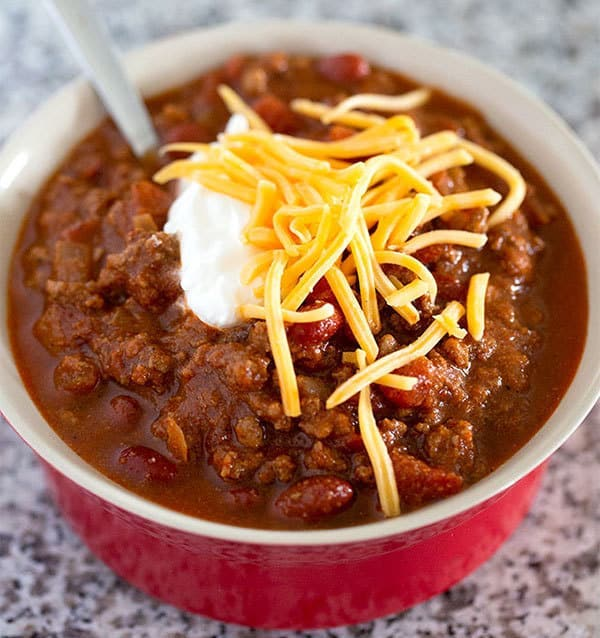

This traditional chili recipe is just like mom used to make with ground beef, beans, and a simple homemade blend of chili seasonings.

Prep Time:
5 minutes
Cook Time
25 minutes
Total Time:
30 minutes
Servings:
6 servings
Calories:
334kcal
Ingredients
1 tablespoon olive oil
1 medium yellow onion -diced
1 pound 90% lean ground beef
2 1/2 tablespoons chili powder
2 tablespoons ground cumin
2 tablespoons granulated sugar
2 tablespoons tomato paste
1 tablespoon garlic powder
1 1/2 teaspoons salt
1/2 teaspoon ground black pepper
1/4 teaspoon ground cayenne pepper* -optional
1 1/2 cups beef broth
1 (15 oz.) can petite diced tomatoes
1 (16 oz.) can red kidney beans, drained and rinsed
1 (8 oz.) can tomato sauce
Instructions
Add the olive oil to a large soup pot and place it over medium-high heat for two minutes. Add the onion. Cook for 5 minutes, stirring occasionally.
Add the ground beef to the pot. Break it apart with a wooden spoon. Cook for 6-7 minutes, until the beef is browned, stirring occasionally.
Add the chili powder, cumin, sugar, tomato paste, garlic powder, salt, pepper, and optional cayenne. Stir until well combined.
Add the broth, diced tomatoes (with their juice), drained beans, and tomato sauce. Stir well.
Bring the liquid to a low boil. Then, reduce the heat (low to medium-low) to gently simmer the chili, uncovered, for 20-25 minutes, stirring occasionally.
Remove the pot from the heat. Let the chili rest for 5-10 minutes before serving.